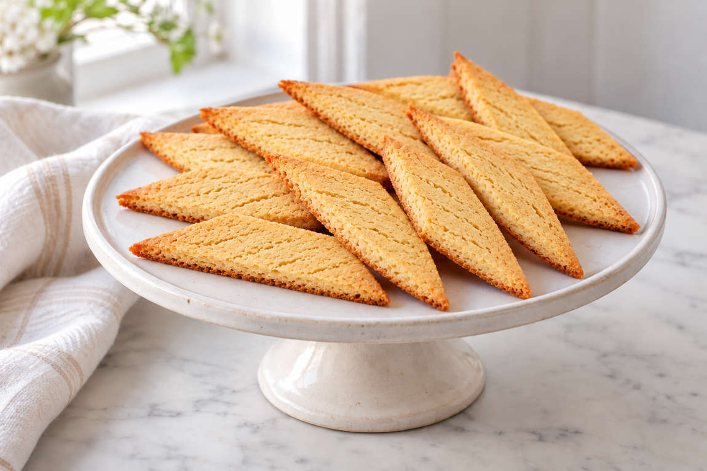

Drömmar

Spröda småkakor med mild vaniljsmak...
Läs mer
På den här sidan finns recept på sju småkakor att prova på!
Spröda småkakor med mild vaniljsmak...
Läs mer
Spröda mandelkakor med pärlsocker...
Läs mer
Små mördegskakor med hallonsylt i mitten...
Läs mer
Knäckiga småkakor med smak av kola...
Läs mer
Tvåfärgade småkakor med vanilj- och chokladsmak...
Läs mer
Mjuka och chokladiga kakor med vanilj- och chokladsmak...
Läs mer
Knäckiga kakor med havregryn...
Läs mer